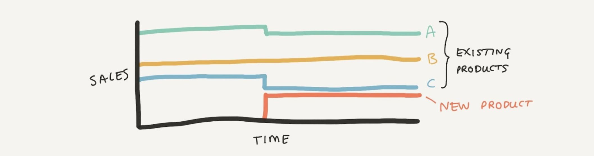
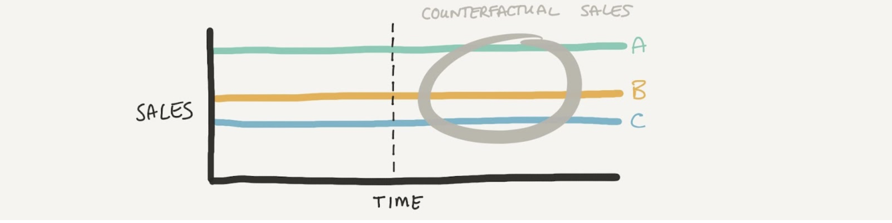
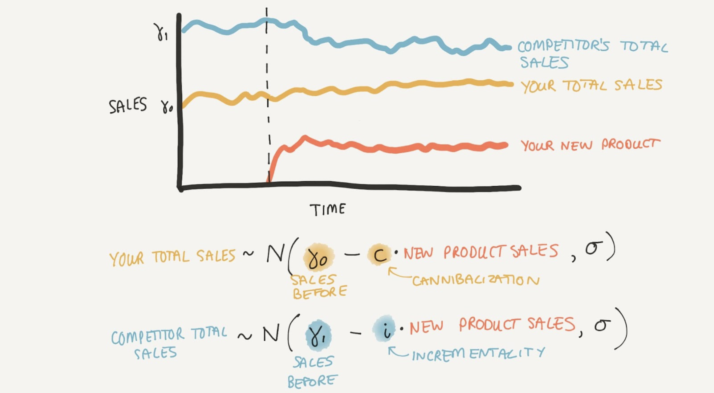
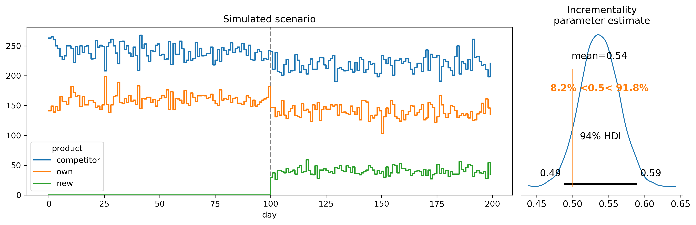
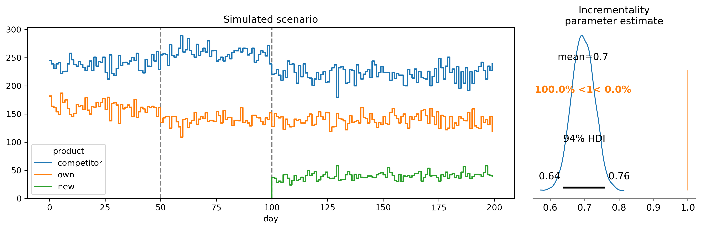

Executive summary: In today’s competitive and saturated consumer markets, companies struggle to gain market share through new product releases. Traditional methods of estimating where sales originate—whether they are incremental or cannibalistic—often fall short in complex, dynamic environments. Colgate-Palmolive approached PyMC Labs in 2023 to develop causal sales analytics software that could accurately quantify these aspects to guide product decision-making. This blog post delves into the intricacies of this problem and why standard solutions are insufficient. It explores the need for a bespoke approach incorporating causal and counterfactual thinking to understand sales impacts. By outlining an initial simple model and its limitations, the post sets the stage for the more sophisticated solution developed by PyMC Labs, which will be detailed in a subsequent post. This advanced approach aims to provide actionable insights for better product portfolio management, ultimately enhancing sales, market share, and profitability.
Imagine you are a product company in a competitive and saturated market - think consumer staples like food, beverages, and household products. It won’t be possible to get easy wins by appealing to brand new customers (i.e. growing the pie) because everyone is buying either your or your competitors’ products already. Instead, both you and your competitors have been vying for market share (i.e. slices of the pie) over time. In addition to marketing efforts, you have been trying to do this by releasing new products with attributes that you believe have higher appeal to customers or higher profit margins.
Over time, the products available in the marketplace change - some products are classic and persist, others fall out of favor and are discontinued. And others are newly released with the hope of increasing your market share. So we have a complex and dynamic ecosystem of products. Each company makes decisions about when to discontinue a product, when to release new products, and what kinds of attributes they should have.
Say you released a new product last year and it sold 100,000 units. How do you know where those sales came from? What we really want is for many of those sales to be incremental in that they took sales away from competitor products. But some proportion of those sales may have been cannibalistic in that they took sales away from your own existing products.
You could build a statistical (or black-box Machine Learning) solution which might give correlational insights such as “When you release a product of type X, you tend to see Y% innovation.” However, you are aware that while statistical solutions are exactly the right approach in many situations, they can lead to unexpected outcomes once you start acting and intervening. And intervening, in the form of releasing or not releasing new products, is exactly what you want to do.
So you need a causal model of how product sales are affected by product introductions and withdrawals. If this model is a close approximation of the real world, then we’d be better positioned to make predictions about counterfactual scenarios to understand what would have happened in alternative product launch scenarios.
Clearly, companies have been making decisions about product releases for a long time. Some of this will be guided by good old human intuition, and some will be informed by sales data or customer research. But does this leave money on the table? Can we squeeze more insights from the data? Can we get quantitative estimates of where a product’s sales are coming from - what portion of sales are incremental versus cannibalistic? If so, these insights could be used to more effectively guide future product portfolio decisions with the ultimate goal of improving KPIs such as sales volume, market share, profits, or profit margins.
Back in 2023, Colgate-Palmolive approached us with exactly these questions. While it is possible to buy retail sales data, the data alone does not give us all the answers we want. They asked us to build advanced sales analytics software to estimate where a product’s sales were coming from in order to guide their product decision making. While the end goal was a Python package which their data scientists could use going forward, the project was very research-heavy. A follow up blog post will describe the actual solution we provided, but the rest of this blog post outlines the richness of the problem and why a simple but sophisticated solution was not up to the task.
Because many businesses share the same basic set of problems, an ecosystem of data science and modeling approaches have been applied to deliver business insights. The table below gives a brief overview of some common business questions and the solutions that are commonly deployed:
| Question | Solution |
|---|---|
| What will happen to consumer demand in the near future? | Time series forecasting tools |
| Which are my most effective advertising channels and how should I allocate marketing budgets? | Media Mix Modeling. Read more in our MMM blog post series (Part 1, Part 2, Part 3), and find out about our open source pymc-marketing package here. |
| How much should I spend to acquire a customer and still expect to profit? | Customer Lifetime Value modeling. Read more about our work on CLV models here, and find out about our open source pymc-marketing package here. |
| How should I price my product? | Price elasticity estimation and price optimization |
| Sales incrementality/cannibalization | ??? |
However, when it comes to asking questions about which of my product sales are incremental or cannibalistic, or which product’s sales are affected by a new product, we don't have a well known go-to solution. There are of course some companies offering to provide such insights, but there is no transparency in which algorithms they are using or how effective or accurate they may be. So we needed to do our own research and build a bespoke solution. This is what we at PyMC Labs get out of bed for!
At first glance, estimating incrementality could seem trivial - you could just look at how the sales of existing products decline when a new product is launched, and there is your answer. In the scenario below, the new product sales (red) mostly come from product C (blue) and a bit from product A (green), but not from product B (orange).

However, this kind of “eyeball it” approach is only feasible in toy scenarios where you have a few products with easily predictable sales. While there may be a couple of real markets where this might be feasible, this is absolutely not the case for consumer packaged goods.
One of the key things we first identified was the need to go beyond statistical thinking and have causal and counterfactual thinking at the heart of the project. The whole concept of a new product’s sales being ‘taken’ from sales of existing products necessitates counterfactual thinking - It requires us to think about what the sales of the existing products would have been in the counterfactual scenario that a new product had not been released (see below).

By comparing the sales of the existing products in the counterfactual scenario to the sales in the ‘actual scenario’, and summing over the time period since introduction of the new product, we can estimate the total causal impact of the new product. And because we know which products belong to which companies, it is possible to estimate how many sales are incremental (coming from competitor products) and cannibalistic (coming from one’s own products).
In order to underscore the complexity of the problem, we’ll walk through the construction of a simple but reasonable model. It might initially appear very elegant, and while it may be useful in some situations, it will not be able to serve our needs.
Let’s start with a simple scenario, shown in the figure below. We have the total sales across your product line up, and the total sales of all products from all competitors*️⃣. Finally, we have the sales data for your own new product that was introduced at the point shown by the dashed line.
*️⃣ While it may be surprising to those outside of the retail sector, it is possible to get data on competitor sales. There are companies which purchase sales information from retailers, aggregate, and sell that information on as a service.

What we could do is to build a kind of multivariate interrupted time series model. We could model your and competitor products as normally distributed around some expected value with some level of variance, $\sigma$. This expected value would have an intercept parameter ($\gamma$) which describes the sales before the new product introduction. Then, the sales after the product introduction could be modeled as that baseline level minus some proportion of the new product sales. The parameter $c$ will define the extent of cannibalization. If $c=0$ then your sales are unaffected, if $c=1$ then all of the new product sales will have come from your own existing products. We can define incrementality as $i=1-c$; when $i=0$ we have no incrementality and it’s all cannibalization, and when $i=1$ we have pure incrementality.
This model could be seen as a multivariate interrupted time series approach. In an interrupted time series approach you would typically have a single (univariate) time series and the task is to infer if an intervention delivered at a particular point in time had a causal effect. This model is different firstly in that we have multiple outcome variables, namely both your and your competitor’s total sales. Secondly, because the ‘treatment’ is effectively ‘graded’ because the number of new product sales (the ‘treatment’) varies over time.
Below we plot the result of a simulation study where your company has 40% market share before the introduction of a new product. When the new product is launched, it is wildly successful, capturing 10% of the total market. The question is, where did those sales come from. In our simulation we made it such that there was 50% incrementality and 50% cannibalization, so you can see that both your and your competitors' sales decreased when your new product was released. The model does a good job and estimates a posterior distribution for the incrementality parameter centered almost exactly on 0.5, i.e. 50%.

So we’ve solved the problem?
Anyone working in the data science field knows that one of the major challenges is getting clean data to build your modeling work upon. One of our first steps was to familiarize ourselves with the nature of the sales data. We engaged in a thorough exploratory data analysis and worked with the client’s data scientists to make sure we understood the domain and the in’s and out’s of the retail datasets.
There are a number of important aspects about the data which add to the complexity of the problem. In contrast to the simplified scenario presented above, real-world sales data involve many more products, sales are not flat over time, and within any given timeframe we can have multiple products (perhaps from different companies) being released or withdrawn. So the real data can look more like what we show schematically in the figure below. All of this combines to make it much more complex to model and estimate counterfactual sales data. In short, the task before us was not a trivial one!
In a marginally more complex scenario (below) we will see that our simple and elegant model fails. Here, a competitor releases a new product at $t=50$ which is 100% incremental for them, we can see your market share decrease and theirs increase. In response, you launch a new product at $t=100$ which is 100% incremental for you, resulting in a decrease in competitor market share and no change to sales of your own existing products. Despite this being a rather minor addition to the complexity of the scenario, our simple and elegant model fails. What actually happened was your product was 100% incremental, but the model’s estimate falls quite far short of this, estimating somewhere between 64-76% incrementality.

We found out early on in the project that a simple model like the multivariate interrupted time series would not help us solve our problems. Deviating even slightly from the idealized situation has resulted in the model producing biased estimates of incrementality and cannibalization. The toothpaste market is large with product introductions and withdrawals happening all the time, so it would be impossible to crop the data with sufficient pre- and post- product introduction observations without contamination from other product introductions/withdrawals.
The core goal of our project was to estimate where new products’ sales were coming from - how much of products’ sales are incremental versus cannibalistic? Providing these business insights is enormously valuable for making product development decisions in a global market estimated at $20.8 billion in 2023.
While we do of course want to know the net incrementality/cannibalization, we also really want insights on a product level. That is, we don’t just want to know if sales are coming from your own or any of your competitors' products, we want to know which products’ sales are being impacted and by how much. Launching a new whitening product is much more likely to take sales from other whitening products as compared to other categories such as childrens or cavity protection. And so a solution will have to operate on the product level - a much more challenging proposition than the simplified scenarios shown above. In fact, we would really want to incorporate product attribute information into our model as this will be highly informative about where sales may be coming from. Doing this with a generic time-series type approach would be hard, which makes the model we’ve presented so far even less satisfactory.
While we’ve talked about saturated markets, this characteristic may not always hold, and so our modeling solution must be robust to this. There are a few reasons for this. It is plausible to assume the toothpaste market is close to saturated in most wealthy countries. However, because there are so many toothpaste brands and products, it is not necessarily true that all toothpaste products enter into the retail sales data. This can pose a challenge - from a modeling perspective we must take into account that there may be a small “dark pool” of toothpaste products that customers may enter or leave at different points in time. Additionally, while many markets may be considered as saturated, the global “market is experiencing significant growth, driven by increasing global awareness of oral hygiene and the expanding middle class in emerging economies.” And so our modeling solution needs to be flexible for these different situations.
How much confidence should we place in our incrementality and cannibalization estimates? It is less and less acceptable to provide so-called point-estimates, where we have single-number estimates such as “12.4% incrementality.” Instead, if we are to base high-value decisions on business insights, then they need to carry levels of confidence so that decision makers can be informed. For us, this was not hard! PyMC Labs is Bayesian at heart and so virtually everything we do sits within the Bayesian framework. This allows us to attach Bayesian credible intervals to all of our insights so we know when we know and know when we don’t know.
Hopefully at this point you appreciate the value that accurate incrementality and cannibalization estimates can provide to companies regularly making product launch and withdrawal decisions. And hopefully we have conveyed that it is complex, and non-trivial to provide these estimates. We have shown a simple yet elegant solution (multivariate interrupted time series), but shown that this is not robust enough to use in many complex markets. In the next post we will outline the solution that we handed over. We believe that it does a very good job - and we hope you are excited to learn about it soon. And even better - we are going to open-source a form of the model in the near future. Stay tuned!
If you are interested in seeing what we at PyMC Labs can do for you, then please email info@pymc-labs.com. We work with companies at a variety of scales and with varying levels of existing modeling capacity. We also run corporate workshop training events and can provide sessions ranging from introduction to Bayes to more advanced topics.